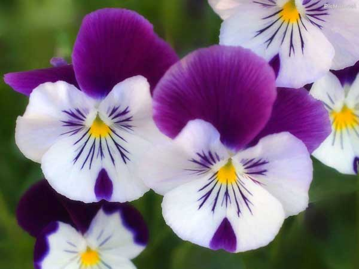
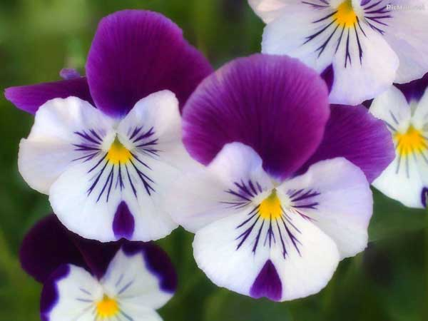

bunga-bunga tropis memiliki warna cerah dan berbunga sepanjang tahun.
Bunga-bunga tropis antara lain bungan sepatu, teratai, kamboja, mawar, kenanga dll.
Bunga subtropis memiliki musim tertentu untuk berbunga.
contoh bunga subtropis antara lain: sakuta, tulip.
tidak ada gambar
tidak ada gambar
tidak ada gambar


 
